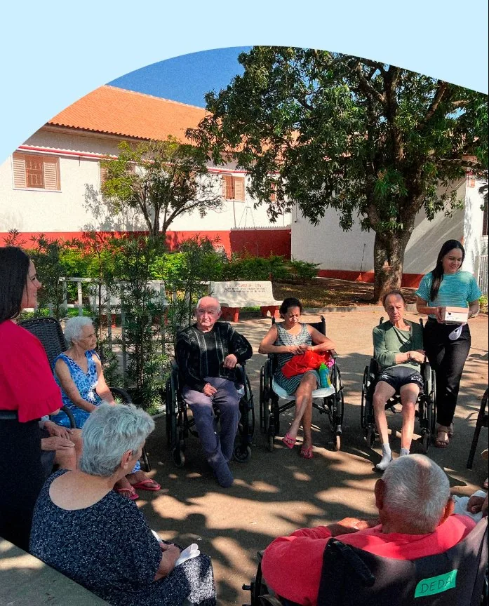
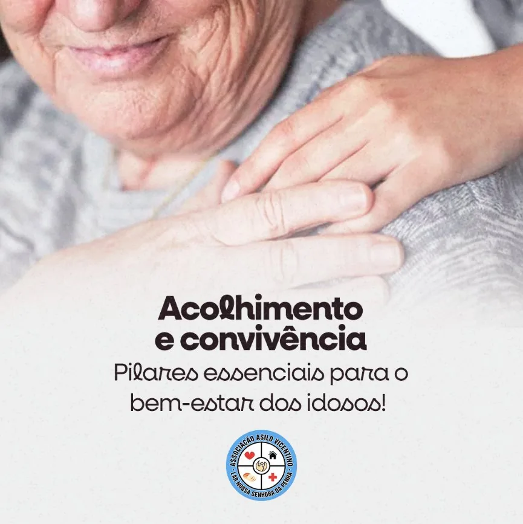
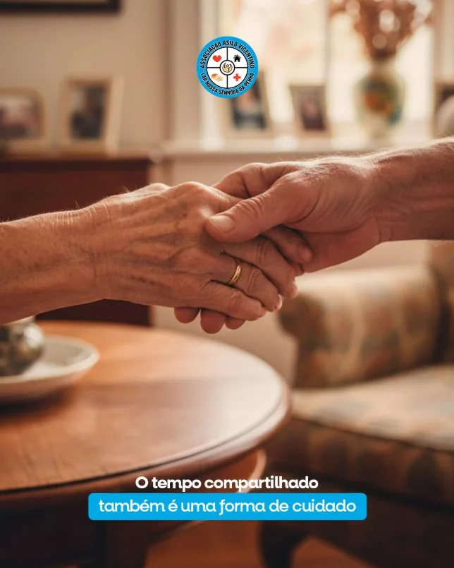
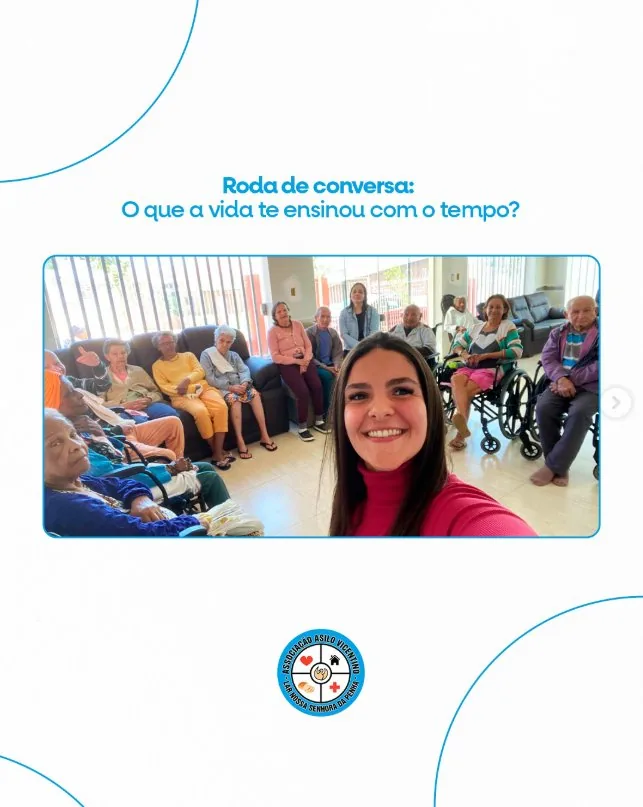

Quer doar alimentos, roupas ou outros itens?
Entre em contato no final da página para combinar a entrega com a equipe do asilo.
Ir para contatoUnimos a precisão técnica da medicina moderna com a ternura de um lar dedicado, criando um ambiente de serenidade inigualável.

Acolhimento, atencao e respeito em cada etapa da rotina.
Inovação Constante

Desde 1965, acolhemos idosos em Pirapozinho com respeito, presença e cuidado diário.
Fundado em 29/10/1965 sobre pilares de respeito e humanidade, o Asilo Vicentino cresceu como um lar de acolhimento para idosos, preservando sua essência familiar e o compromisso diário com cuidado digno.
Nossa história é escrita diariamente através do equilíbrio entre protocolos médicos rigorosos e o calor de um sorriso amigo, garantindo que a longevidade seja celebrada com plenitude.
Momentos simples que dão ritmo ao lar: refeições, missa, conversa, memória, celebrações e descanso com presença da equipe.
Alimentação, conversa e presença da equipe em um ambiente calmo e familiar.
Baixe os PDFs publicados pela coordenação, organizados por ano, mês e categoria.
Última atualização: carregando...
Carregando notícias...
"No Asilo Vicentino, sentimos que nossa família ganhou mais uma casa. O cuidado diário e o carinho da equipe nos trazem tranquilidade de verdade."

"O que mais nos toca no Asilo Vicentino é a atenção com cada pessoa. Cada detalhe, da alimentação às atividades, é pensado com respeito e humanidade."

Sua contribuição apoia alimentação, higiene, atividades e melhorias simples que fazem diferença na rotina dos moradores.
Entre em contato no final da página para combinar a entrega com a equipe do asilo.
Ir para contatoFaltam R$ 1.150 para bater a meta.
Refeições, itens de cozinha e cuidados nutricionais.
Atividades, eventos e momentos de convivência.
Apoio para melhorias, ampliação e construção.
Sua ajuda mantém alimentação, higiene e medicação em dia.
Investimos em equipamentos e estrutura para mais proteção.
Atividades e eventos que valorizam convivência e bem-estar.
Preencha seus dados e escolha o valor para apoiar diretamente o cuidado dos moradores.
Cada contribuição ajuda diretamente na rotina dos residentes.
A equipe do asilo acompanhará o recebimento e manterá a contribuição organizada no sistema.